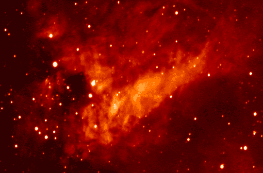

The
Universe is a dangerous place. There are black holes, and sudden explosions, and
meteors flying around everywhere. But hey, that's not all. Something so
ordinary like a cloud may one day do us in as well.
Of
course, the Doomsday Cloud that will bring about the end of the world is quite different from those puny pieces
of wadding you see up in the sky every day. Our cloud of doom is a bit bigger
than that. It would take our planet something like one million years to pass
through it. That's why scientists refer to the thing as a `Giant Molecular
Cloud' - `giant' being no understatement for a cloud that's several light
years across.
In
the emptiness of the Cosmos, Giant Molecular Clouds are nothing special. Giant Molecular Clouds are, in fact,
stars in the making. First, there's a cosmic cloud of dust and gas; next,
gravity presses the
cloud together -- and finally, there's a bunch of stars lighting up. In fact, our own Sun
started out as a cosmic cloud, too.
But what harm can something so utterly boring like a cloud really do?, you may ask. Well, for one thing, space clouds have the rather nasty habit of choking the life out of every planet they swallow. According to some scientists, it was a cosmic cloud, and not a comet, that did in those poor old dinosaurs!
Giant
Molecular Clouds have a reputation for messing up the atmosphere of each
Earth-like planet they encounter. When our planet passes one,
dust from the GMC will block the Sun. The Sun would become a vague blot of
light in the sky. In no time, a spine chilling Ice Age
would break out.
Oh,
big deal, so you turn up the heating. But wait -- that was
just the beginning.
Apart from dust, Giant Molecular Clouds typically consist
of huge amounts of hydrogen. Loads of it would penetrate our atmosphere. Once
there, the hydrogen would start mopping up oxygen atoms, combining them into
water. Surely, this would bring about a lot of rain (as you might expect from
a cloud). But what's worse, with the planet's oxygen level dropping, breathing would become hard -- if not
impossible.
And the Doomsday Cloud isn't finished yet. Since the thing consists of soot and dust, it has gravity. Consequently, it will attract millions and millions of cosmic rocks and meteorites from the outer regions of the solar system. Planet sized chunks of stone and ice will come flying in from all directions. Some will explode and block the Sun even more; others will just hang around a bit or, well, impact on Earth.
|  |
|
|
So
basically, GMCs bring about all kinds of apocalyptic events at once. Meteors,
Ice Ages, Nuclear Winters,
oxygen shortage, floods, volcanoes -- you name it,
it's all there. Once smothered in a space cloud, we would find our planet harassed by every weird
and violent natural phenomenon you can think of. For hundreds of thousands of
years in a row, Earth would be a complete mess, a mayhem of meteoric impacts,
blackened Suns, climate shifts and cataclysmic floods not unlike what Saint
John wrote about in his biblical book The Apocalypse.
Gladly,
we should see a cloud like this coming. And as far as Exit Mundi knows, the
cosmic weather forecast looks quite good, predicting a cloudless Universe for
many hundreds of thousands of years to come.
On the other hand, it doesn't really help that one day, our solar system may indeed run into a GMC. When it does, better prepare for the worst. Space weather would be BAD for a million of years or so. That's plenty of time to rid our planet of all things bigger than a microbe.
|
Chaos Cloud! What is ten million miles wide, is made of burning acid, has a black hole for a heart -- and is hurtling towards us at near light speed? It is the 'chaos cloud', my friends. This infamous bulb of misery is due to arrive on June 1st, 2014. And it merciless dissolves everything it encounters: comets, planets, even entire stars. Well, or so they say. If you have never heard of the chaos cloud, don't worry. Neither had we. That was, until the object popped up on Yahoo news -- in the subdirectory 'entertainment', of all places. According to the news clipping, the cloud was discovered on April 6th by NASA-scientists working with the Chandra X-Ray Observatory. Upon discovery, NASA decided to keep it a secret. Or so at least claims one dr. Albert Sherwinski, a Cambridge based astrophysicist. Of course, the news is fake. It's a joke. It originally appeared in the magazine Weekly World News, a magazine full of pranks and fake news. There, it is listed among headlines like 'Scientists find women's asking-for-directions gene' and 'Nuclear rocket fired at UFO'. To be sure, we ran a few checks. Lo and behold: there is no astrophysicist by the name of Albert Sherwinski. What's more, we should see the cloud with the naked eye by now (and we don't). And oh, a minor detail: in space, burning acid clouds revolving around black holes simply don't exist. |
 |
 |
All texts Copyright © Exit Mundi / AW Bruna
2000-2007.
You're not allowed to copy, edit, publish, print or make public any material
from this website without written permission by Exit Mundi.